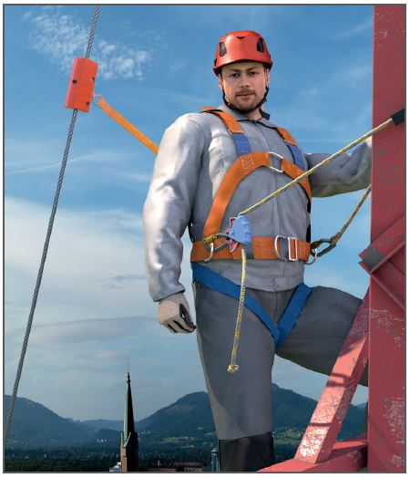

Korrosionsschutzarbeiten an Metallgittermasten |

Tabelle 1
| Netz-Nennspannung KV | Schutzabstand (Abstand in m von ungeschützten unter Spannung stehenden Teilen) |
| Bis 1 | 1,0 |
| über 1 bis 110 | 3,0 |
| über 110 bis 220 | 4,0 |
| über 220 bis 380 | 5,0 |
Tabelle 2
| Netz-Nennspannung KV | Schutzabstand (Abstand in m von ungeschützten unter Spannung stehenden Teilen) |
| Bis 1 | 0,5 |
| über 1 bis 30 | 1,5 |
| über 30 bis 110 | 2,0 |
| über 110 bis 220 | 3,0 |
| über 220 bis 380 | 4,0 |
07/2021